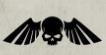
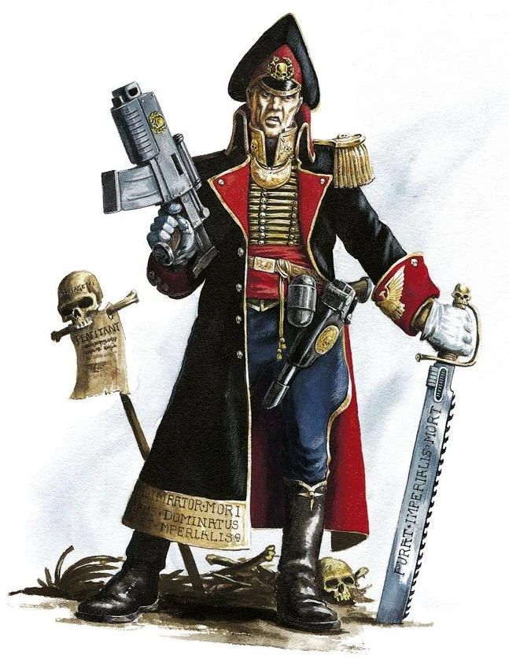
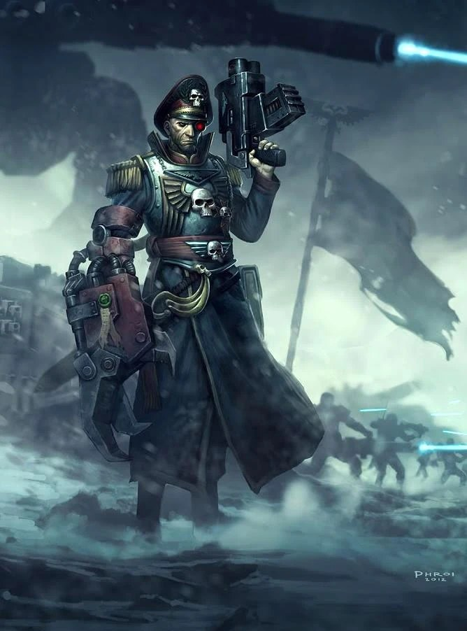

Commissar
| Commissar | |
|---|---|
 Badge of the Officio Prefectus, the winged skull Artwork © Games Workshop | |
 Sebastian Yarrick, Commissar of Armageddon Artwork © Games Workshop | |
| Notable holder Sebastian Yarrick Commissar of Armageddon; active in the Era Indomitus | |
| Officio Prefectus Astra Militarum Schola Progenium Departmento Munitorum | |
| Style | Commissar; Lord Commissar; Commissar-General |
| Type | Officer of the Officio Prefectus, serving with the Astra Militarum and the Imperial Navy |
| Member of | The Officio Prefectus |
| Reports to | The Departmento Munitorum of the Administratum; the regiment's commander in the field |
| Appointer | The Officio Prefectus, from graduates of the Schola Progenium |
| Term length | For life, or until killed in service |
| Formation | c. 021.M31, after the Horus Heresy[a] |
| First holder | The discipline masters of the Imperial Army are the predecessors |
| Deputy | Cadet Commissars |
| Ranks | Cadet Commissar; Junior Commissar; Commissar; Colonel-Commissar; Lord Commissar; Commissar-General |
| Insignia | Peaked cap with aquila or skull; black greatcoat; red sash |
| Powers | Summary execution of any soldier or officer for cowardice or treachery |
A Commissar is an officer of the Officio Prefectus, also called the Commissariat, who serves with the regiments of the Astra Militarum and the ships of the Imperial Navy to keep their morale, discipline and loyalty to the Emperor of Mankind. A Commissar stands outside the regiment's chain of command. He may take command of a unit whose officers have failed, and he has the power to execute summarily any soldier or officer, of any rank, for cowardice, desertion or heresy. Every Imperial citizen knows his peaked cap and greatcoat from the frescoes of the hab-blocks and the recruitment picts of the Departmento Munitorum.[1][2]
Commissars are drawn from the pupils of the Schola Progenium, the institutions that raise the orphans of Imperial servants, and only the most zealous and capable are recommended for the Officio Prefectus. They serve first as Cadet Commissars in training squads, are then assigned to regiments, and the most distinguished rise to the rank of Lord Commissar, who advises a general or leads troops directly. Because a Commissar comes from a different world than the regiment he serves, he is untouched by its traditions and judges it purely from the view of the Imperium as a whole.[1][3]
The Commissariat traces its foundation to the reform of the Imperial Army after the Horus Heresy (005–014.M31), when the whole body of the Army was divided into the Astra Militarum, also called the Imperial Guard, and the Imperial Navy, and when it was resolved to place in every regiment an officer whose only loyalty was to the Imperium. Its forerunners were the discipline masters of the Great Crusade, who enforced the Imperial Truth in the Army's regiments. In the centuries since, the Commissariat has become a permanent part of the command staff of the Astra Militarum, and its officers have served in every great war of the Imperium.[4][5]
The Commissar is one of the most familiar figures of the Imperium, feared by the soldiers he serves with and often hated, though many are respected and some loved. Sebastian Yarrick of Armageddon, Ciaphas Cain, called the Hero of the Imperium, and Colonel-Commissar Ibram Gaunt of the Tanith First and Only are among the most celebrated soldiers of the 41st millennium.[6][7]
History
[edit]Discipline masters of the Great Crusade
[edit]The Imperial Army of the Great Crusade (c. 798.M30 – 005.M31) was raised from the fighting men and women of the worlds liberated by the Space Marine Legions. In the early crusade it served almost entirely in garrison and pacification roles, but by the latter half it fought on the front line and supplemented the Legions in the first assaults on planets, as the Astartes were stretched too thin across the growing Imperium. The Army had no standard organisation. Its regiments ranged from barbarians with power axes to mechanised infantry with directed-energy weapons whose designs are now lost, and they were left largely to their own devices as long as they served faithfully.[4]
Some regiments carried specialists known as discipline masters. They were veterans of the auxilia regiments of the civilised worlds of the Segmentum Solar, and their task was to enforce order according to the writ of law and to impose the Imperial Truth, and belief in the destiny of Mankind to rule the stars, on native soldiers to whom the Imperium was a new master. They embodied the rule of distant Terra and, as the militia saw it, had the ear of the Emperor himself. To falter in the sight of a discipline master was to fail the Emperor in person. They kept hunting eagles as familiars to track down shirkers, and carried a ceremonial electro-scythe for summary executions. The Commissariat later took them as its model.[4]
The Heresy and the founding of the Officio Prefectus
[edit]In the Horus Heresy (005–014.M31) an estimated forty to fifty per cent of the Imperial Army turned on the Emperor and followed the Warmaster Horus. Most of those regiments later broke down into fragmented Chaos Cults that worshipped the Chaos Gods and ravaged the civilian populations of thousands of worlds, and with the cruisers lent by the Armada Imperialis they spread quickly and left dead worlds behind them, some of which had been their own homes. It is suspected that some Traitor Army regiments took part in the Siege of Terra (013–014.M31), though the extent of the Traitor forces has never been calculated.[4]
When Horus was defeated and the forces of Chaos had fallen back to the Eye of Terror, the loyal regiments were reformed under the logistical authority of the Departmento Munitorum. The Imperial Navy was separated from the Armada Imperialis and made a distinct service, and the ground forces were renamed the Astra Militarum. In the same reforms, in about 021.M31, the Officio Prefectus was formed to be the Imperium's bulwark among the Guard and the Navy against the influence of Chaos. A Commissar was given the power to ensure his regiment's continued loyalty and was charged to prevent the spread of corruption by any means. Commissars were attached to every regiment and were used heavily in the wake of the Traitors' retreat to ensure that worlds ravaged by Chaos were not subverted by sleeper cults.[4][1]
Rebirth and the transfer of the purge
[edit]Before the Imperium was fully reforged under the primarch Roboute Guilliman in the Time of Rebirth, millions were executed by the Commissariat as traitors and heretics. Eventually the task of rooting out internal threats passed to the Inquisition, first to the Ordo Malleus and, after its foundation in the Age of Apostasy in the early 36th millennium, to the Ordo Hereticus, whose investigators were much better suited to the work than the military political officers of the Commissariat. The Commissars were left with the discipline and morale of the troops, which they have kept since.[4][8]
The late 41st millennium and the Era Indomitus
[edit]Over the last ten thousand years the Commissariat has remained a part of the Guard's command structure, and it is rare for a regimental commander or Lord Commander to lack a Commissar on his staff. A few have risen to commands of their own. Sebastian Yarrick took command of the Steel Legion garrison of Hades Hive in the Second War for Armageddon (941.M41) and became overall commander of the Imperial forces in the Third War (998.M41). Ibram Gaunt, who received command of the Tanith regiments from Warmaster Slaydo in the Sabbat Worlds Crusade (from 755.M41), became the only known Colonel-Commissar to keep command of a full regiment.[4][9]
After the opening of the Great Rift in 999.M41 and the launch of the Indomitus Crusade, Commissars have served in the armies of the crusade and in the isolated regiments of the Imperium Nihilus, where their duty to hold troops to their posts without hope of relief has become harder. The Commissariat remains attached to every regiment that the Departmento Munitorum raises in the Era Indomitus.[5]
Training
[edit]Commissars are trained from a young age to uphold the Imperial Creed and its strictures by the Schola Progenium, which also provides training for cadets, Grenadiers and Storm Troopers. The course is demanding and meant to weed out the weak as early as possible. It includes military exercise, weapons proficiency, hand-to-hand combat and religious study, and it aims at a total dedication that lets the pupil deliver the Emperor's justice without hesitation or remorse. A candidate must have unreserved faith in the Emperor, and must fight as well as any hive-spire duellist while acting as both merciless taskmaster and inspiring hero.[1][3]
On leaving the Schola a pupil is assigned to a regiment as a Cadet Commissar, with the standing of a private soldier, under the tutelage of the regiment's commander or of a senior Commissar. Cadets form their own units of ten to twenty, led by a veteran Commissar, and are armed with the ordinary lasgun. Commanders think themselves fortunate when such a unit joins a campaign, for the cadets fight with a ferocity uncommon even in the Guard's elite, and they know that they will be shot if they falter. Promotion to full Commissar comes only when the unit's observer judges a cadet ready, and it may take any length of time. Cadets who fail their training, but not through cowardice, are often given a commission in a penal battalion or volunteer for a Rogue Trader's retinue.[3][10]

Duties and powers
[edit]A Commissar is empowered to preserve the moral purity and devotion of the men of his platoon, company or regiment by any means. He may execute any trooper, non-commissioned officer or officer who shows signs of breaking, a punishment which reminds the Guard that they must fear the Commissar's bolt pistol more than the enemy and which spares adjacent units the same fate. In principle his authority extends to regimental commanders, to Lord Generals and to governors, if he has evidence of incompetence or treachery. Most units rarely break while a Commissar is with them. Commissars who cannot command the fear and respect of a broken unit have sometimes been killed by the deserters.[1][11]
He may take command of a unit for a short time, usually a single battle, after shooting its leader. He fights in the front line and is trained as an orator, delivering speeches before battle and roaring prayers to the Emperor during it, which leads to friendly rivalries with any priest of the Ecclesiarchy present. In long campaigns, particularly sieges, he may requisition Administratum scribes to produce propaganda for the troops if the commander approves. After the reconquest of a world held by aliens he may open information stations where the locals can name human collaborators, a practice most common on worlds retaken from the T'au Empire.[1][5]
A Commissar must also watch any psyker under his care. Astropaths and Sanctioned Psykers attached to the Guard are in theory able to control their powers, but the Commissar looks for the signs of warp taint and possession. When he finds them he executes the psyker with a point-blank shot to the head, since it is held better to kill an innocent than to face a newborn Daemonhost. Where the hand of Chaos is suspected he refers the case to the Inquisition, though he may act alone if no Inquisitor is at hand. The Officio Prefectus has authority over all branches of the Imperial military except the Adeptus Astartes, the Adepta Sororitas and the Skitarii of the Adeptus Mechanicus.[8][11]
Ranks
[edit]The Commissariat has a ladder of ranks, of which the table gives the main grades from the highest to the lowest. A Commissar is attached to every regiment of the Astra Militarum or ship of the Imperial Navy, and regiments of great size have several.[1][5]
| Rank | Role |
|---|---|
| Commissar-General | The senior rank of the Commissariat. It is held by the Commissars attached to the commanders of crusades and army groups, who assign junior Commissars to watch the officers of the Guard and promote cadets to full rank. |
| PDF Commissar | A Commissar posted to the Planetary Defence Force of a world or sub-sector, usually an old officer or one under disciplinary action, who often plays no part in the force's life. Tension with local Commissariats, which some defence forces keep, is common, and Imperial Commissars have been known to execute their local counterparts for overstepping their authority. |
| Lord Commissar | A senior Commissar promoted after exemplary service over many decades, who leads soldiers into battle directly, advises a general or takes command after executing a commander he has found wanting. |
| Colonel-Commissar | A rare dual rank conferred only in extraordinary circumstances on a Commissar who is also given command of a regiment. The Commissariat regards the conflict between the two roles as a threat to discipline. |
| Commissar-Captain | A rarely seen rank between Commissar and Commissar-General, whose holders have been seen supervising at regimental level. |
| Commissar | The standard rank, with at least one officer per regiment or ship. |
| Junior Commissar | An aide to a full Commissar, usually with a squad, platoon or company. He may not execute anyone without the consent of a superior. |
| Cadet Commissar | A graduate of the Schola in a training squad, equipped as a guardsman and wearing blue trim and a cadet emblem in place of the skull. |
Insignia and wargear
[edit]The Commissar's uniform is a black greatcoat with gold and red epaulets and red lining on collar and cuffs, a peaked cap with an aquila or a skull that marks a member of the Officio Prefectus, and often a red sash. Many wear a breastplate with the same devices as the cap and carry devotional symbols, such as an aquila pendant or a volume of the gospels of the Imperial Cult. His badge is the skull between spread wings. The uniform is the same in every regiment, which marks him as an outsider, though many adopt a regimental detail such as a gas mask or a desert scarf to seem more at home.[1]
The standard weapons are a bolt pistol and a chainsword, first presented at the commissioning ceremony in the high chapel of the Schola. A Commissar has access to an officer's armoury and may carry a power sword, a power axe or, rarely, a power fist, and some prefer a full bolter. A plasma pistol is reserved for high-ranking officers and Commissars. Many keep to their first weapons for sentiment or for the reliability of laser arms learned as cadets. A Lord Commissar wears a flak breastplate and usually carries a power sword and a bolt pistol.[1][10]
Reputation
[edit]Propaganda of the Departmento Munitorum presents the Commissar as the soldier's guardian and the embodiment of the Emperor's will, and regimental songs and votive pictures honour famous Commissars as heroes. Soldiers often see him differently, as the officer who stands behind the line with a drawn pistol. Both images are true. The Officio Prefectus teaches that a Commissar must be feared before he is loved, but its most successful officers have been those who won their regiments' trust by sharing their dangers. The Commissar must learn the customs of his regiment and command equal respect from the dutiful Vostroyans and the hard-bitten Catachans. Some regiments, such as those of Cadia and the Death Korps of Krieg, hold their Commissars in high regard, and the Death Korps has its own Commissar-Generals. Others have murdered them.[1][12]
The relation between a Commissar and the regiment's own colonel is delicate. The Commissar may overrule or execute the colonel, but in most regiments the two work together, the colonel commanding and the Commissar enforcing.[2]
Notable Commissars
[edit]Several Commissars have become famous beyond their regiments. Sebastian Yarrick is held to be the greatest in the history of the Officio Prefectus, and was central to the defeat of the greenskin invasions of Armageddon. Ciaphas Cain of the 597th Valhallan Regiment, who is celebrated as a hero but recorded in his private memoirs that he thought himself a coward and a fraud, belongs to the same generation. The Sabbat Worlds Crusade produced many: Ibram Gaunt, who commanded the Tanith First and Only and who learned his trade from Commissar-General Delane Oktar of the Hyrkan 8th; the severe Pius Kowle, who was arrested by Gaunt for the flogging of a guardsman and died in the defence of Vervunhive; and Lady Commissar-General Viktoria Balshin, who was sent to purge the Second Front of the taint of Chaos.[6][7]

Others are recorded for the manner of their falls. Lord Commissar Dominic Seroff, once the comrade of Yarrick, was banished by the Officio Prefectus to the backwater world of Eremus after his association with the governor of Armageddon, and the world died of a warp-plague soon after. Rumour places the Death Guard ship Terminus Est over it. Vance Theren, the senior Commissar of the Orpheus Salient of the Achilus Crusade, oversees thousands of lesser Commissars aboard ships and in regiments. Commissar Tomas Beije of the Tallarn 229th Regiment served at Adumbria in 937.M41, and Lord Commissar Auys Salieri is remembered as a man who could turn a battle with a single shot at a cowardly officer. The world of Terrax holds one of the largest Scholae, and the regiments raised there are trained by the Commissariat's course, so that a Terrax Guard regiment is held equal to a regiment of Commissars.[13][8]
Timeline
[edit]| Date | Event |
|---|---|
| Late M30 | Discipline masters enforce the Imperial Truth in the regiments of the Imperial Army in the Great Crusade[b] |
| 005–014.M31 | The Horus Heresy: forty to fifty per cent of the Army follows Horus into treachery |
| c. 021.M31 | The Officio Prefectus is founded with the division of the Army into the Astra Militarum and the Imperial Navy |
| M32 | The Commissariat executes millions as traitors in the Time of Rebirth[c] |
| Early M36 | The Ordo Hereticus is founded in the Age of Apostasy and takes over the search for internal heresy |
| 755.M41 | Sabbat Worlds Crusade begins; Ibram Gaunt among its Commissars |
| 937.M41 | Commissar Tomas Beije serves with the Tallarn 229th at Adumbria |
| 941.M41 | Yarrick holds Hades Hive in the Second War for Armageddon |
| 998.M41 | Yarrick commands on Armageddon in the Third War |
| 999.M41 onward | Commissars serve with the Indomitus Crusade and in the Imperium Nihilus |
See also
[edit]Notes
[edit]- ^ Officio Prefectus tradition dates the order to the division of the Imperial Army into the Imperial Guard and the Imperial Navy after the Heresy, in about 021.M31; the date is estimated from that reform.
- ^ Estimated from the course of the Great Crusade; no record gives a year.
- ^ Estimated; the record says only "before the Imperium was fully reforged".
References
[edit]- ^ a b c d e f g h i j Codex: Astra Militarum (8th edition). Games Workshop. pp. 10, 64, 90, 101. Only War: Core Rulebook (roleplaying game). Fantasy Flight Games. pg. 61.
- ^ a b Parker, Steve (2013). Rebel Winter (novel). Black Library. pg. 52. Annandale, David. Imperial Creed (novel). Black Library. Ch. 1, Epilogue.
- ^ a b c Stillman, Nigel; Masterson, Sean. "Commissar Training Squads". White Dwarf 115 (UK). Games Workshop. pp. 5-7.
- ^ a b c d e f g Horus Heresy: Collected Visions. Forge World. pg. 121. Annandale, David. The Pyres of Armageddon (novel). Black Library. Ch. 1.
- ^ a b c d Codex: Astra Militarum (6th edition). Games Workshop. pp. 15-16, 21, 28, 31, 53, 57-58, 71, 80-82, 91, 109, 151-153, 184, 200, 307-308.
- ^ a b Mitchell, Sandy. Ciaphas Cain (novel series). Black Library.
- ^ a b Abnett, Dan. Gaunt's Ghosts (novel series). Black Library.
- ^ a b c Dark Heresy: Core Rulebook (roleplaying game). Fantasy Flight Games. pg. 260. Dark Heresy: The Inquisitor's Handbook (roleplaying game). Fantasy Flight Games. pp. 18, 60-61.
- ^ "Commissar Yarrick and Warlord Ghazghkull Mag Uruk Thraka". White Dwarf 152 (US). Games Workshop. pp. 14-22.
- ^ a b Codex: Imperial Guard (4th edition). Games Workshop. pp. 41, 52-53. Codex: Imperial Guard (5th edition). Games Workshop. pp. 32, 63.
- ^ a b Only War: Final Testament (roleplaying game). Fantasy Flight Games. pg. 136. Deathwatch: The Jericho Reach (roleplaying game). Fantasy Flight Games. pg. 137.
- ^ Annandale, David. The Pyres of Armageddon (novel). Black Library. Ch. 1.
- ^ Annandale, David. "The Last Ascension of Dominic Seroff" (short story). Black Library.